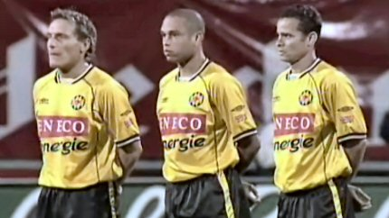
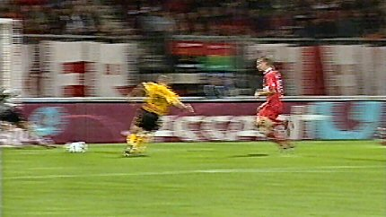

|
FC
Twente - Roda JC (2-3) 2 oktober 2004
|
Spelers komen het veld op.

1 minuut stilte wegens moord op politieagent.
N'Kufo kan in de 8e min. vrijwel ongehinderd inkoppen: 1-0
In de 15e min scoort Sergio de gelijkmaker.

In de 39e min. scoort Cristiano op aangeven van Sergio 1-2.
Overtreding op Kone binnen de 16: penalty.
Van Dijk benut de strafschop: 1-3 (62').
Gregoor laat zich bejubelen door de Roda-supporters.
Twente wordt steeds sterker en Kujovic redt Roda menigmaal voor een
tegentreffer. In de 76e min. is het echter weer prijs voor N'Kufo: 2-3.
Het "Zwitserleven"-gevoel van N'Kufo.
Behoorlijke blessure Luijpers, 10 min. voor tijd.
Twente trekt de wedstrijd steeds meer naar zich toe en het 3-3 scenario
lijkt zich te herhalen. Roda wankelt maar blijft overeind. Drie heel belangrijke
punten gaan mee naar Kerkrade!
Een prachtig sfeerbeeld wanneer de Roda-elf hun fans komen bedanken.
© Koempels Pleasure Dome
|